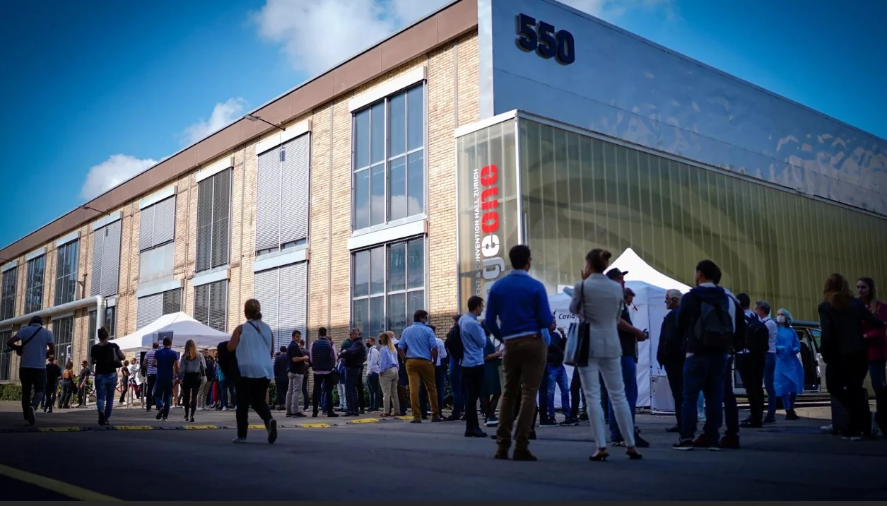
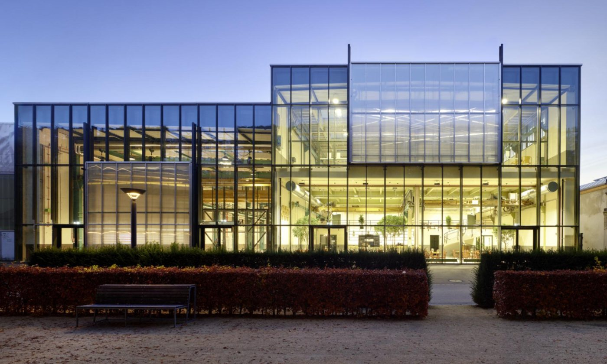

Wir möchten, dass dein Besuch bei uns so angenehm wie möglich wird. Die Antworten auf die häufigsten Fragen findest du direkt hier – von der Anreise über Tickets bis zum Ablauf vor Ort.
MOTO-ZÜRICH 2027 · 19.–21. Februar 2027 · StageOne & Halle 550, Zürich-Oerlikon.
Der Ticketshop für 2027 ist noch nicht geöffnet. Sobald der Verkauf startet, informieren wir hier und über unsere Kanäle.
Findest du keine passende Antwort oder hast du einen Verbesserungsvorschlag? Schreib uns – wir helfen dir gerne weiter und nehmen jede Rückmeldung ernst.
Die MOTO-ZÜRICH findet auf dem ehemaligen ABB-Areal in Zürich-Oerlikon statt – nur wenige Schritte vom Bahnhof Oerlikon.


Mit dem Bahnhof Oerlikon in unmittelbarer Nähe ist das StageOne bequem mit dem öffentlichen Verkehr erreichbar.
Zug: S2, S3, S6, S7, S8, S9, S14, S15, S16, S19, S21, S24
Ausgang: Richtung Gleis 8
Tram: 10, 11 · Bus: 61, 62, 94, 768, 781, 787
Ausgang: Unterführung Richtung Gleis 8
Tram: 64, 80
Bahnhof Oerlikon: 450 m · Zürich HB: 4.7 km · Flughafen Zürich: 7.2 km
Das StageOne verfügt über keine eigenen Parkplätze. Es befinden sich verschiedene öffentliche Parkhäuser in fussläufiger Umgebung.
Empfohlen sind Cityport, Center Eleven, Jungholz, Octavo und Accu. Alle Adressen und Links findest du weiter unten bei den Parkhäusern.
Folgende Motorrad-Abstellplätze stehen zur Verfügung:
Ein Datumswechsel ist leider nicht möglich. Tickets sind nur am gebuchten Datum gültig.
Grundsätzlich ist das Ticket am gebuchten Tag gültig und der Zeitslot ist einzuhalten.
Wenn du deutlich früher oder später kommst, kann es – abhängig von der aktuellen Auslastung – zu Wartezeiten kommen, da die maximale Besucherzahl aus Sicherheitsgründen limitiert ist.
Wir empfehlen, Tickets online über unseren Ticket-Shop zu bestellen, um längere Wartezeiten zu vermeiden.
Vor Ort kannst du mit Bargeld, Karte oder via TWINT bezahlen. (Je nach Anbieter kann es einzelne Ausnahmen geben.)
Kein Problem: Dein Ticket ist in der Regel in deiner E-Mail-Bestätigung enthalten (PDF/QR-Code). Suche die Bestellbestätigung und zeige den QR-Code am Einlass.
Kein Wiedereintritt möglich: Nach Verlassen der Halle bzw. des Geländes ist kein erneuter Einlass möglich. Wenn du aus einem wichtigen Grund kurz raus musst, melde dich bitte beim Infodesk.
Die Tickets sind nur gültig mit dem entsprechenden Dokument / Ausweis / Bestätigung. Bitte beim Eingang bereithalten.
Kinder bis 12 Jahre erhalten in Begleitung eines Erwachsenen kostenlosen Eintritt.
Grundsätzlich möglich, aber wir können die Auslastung der Hallen nicht exakt vorhersagen. Je nach Andrang kann es eng werden und das Navigieren mit Kinderwagen ist dann nicht ideal. Wir würden es eher nicht empfehlen – am Ende ist es aber deine persönliche Entscheidung.
Hunde sind nicht erlaubt. Ausnahme: Assistenzhunde wie Blindenführhunde.
Die Garderobe und der Haupteingang befindet sich in der Halle 550 (Eingang B).
Ohne Garderobe: Direkt zum Eingang beim StageOne gehen, Ticket scannen und eintreten.
Mit Garderobe: Zuerst in der Halle 550 (Eingang B) Jacken und persönliche Gegenstände abgeben, anschliessend zum Eingang beim StageOne, Ticket scannen und eintreten.
In der Halle 550 erwartet dich eine grosse Foodcourt- und Grill-Zone mit verschiedenen Angeboten.
Standort: Halle 550
Auf dem Gelände stehen mehrere Bars mit Getränkesortimenten zur Verfügung. Für Bierbecher, Gläser etc. wird ein Depot von CHF 2.00 erhoben.
Die Abgabe von alkoholischen Getränken erfolgt gemäss den gesetzlichen Bestimmungen. Bitte führe einen gültigen Ausweis (ID oder Pass) für die Alterskontrolle mit.
Rauchen ist in den Hallen verboten. Die Raucherzone befindet sich in der Halle 550 (Innenhof).
Alle Bereiche sind rollstuhlgängig. Der Zugang zum Lift befindet sich auf der rechten Seite der Live Arena.
Wenn du Fragen hast oder Hilfe brauchst: Sprich jederzeit unsere Volunteers an. Du erkennst sie sofort an den MOTO-ZÜRICH Westen.
Auch die Teamleader der Bereiche helfen dir gerne weiter – sie tragen ebenfalls Westen und ein leuchtendes Armband.
Der Sanitätsposten befindet sich bei Stand E1 im StageOne.
Sollte Hilfe benötigt werden, können sich Besuchende jederzeit an das Sicherheitspersonal wenden. Die wichtigsten Notfallnummern:
Etwas verloren oder gefunden? Bitte melde dich beim Infodesk. Fundgegenstände werden dort gesammelt und ausgegeben.
Das StageOne verfügt über keine eigenen Parkplätze. Diese öffentlichen Parkhäuser liegen in fussläufiger Umgebung in Zürich-Oerlikon.